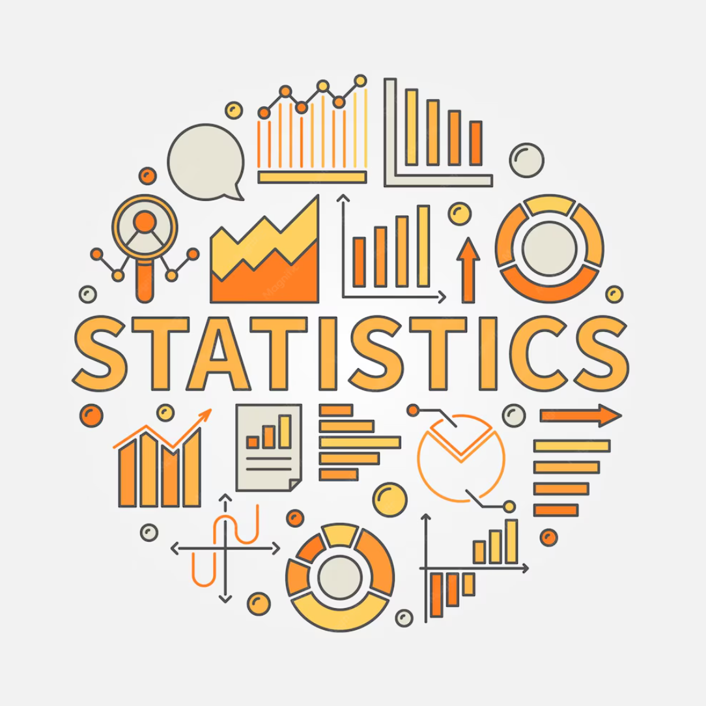

About the Instructor
Dr. USHA MOHAN
- Ph.D (operation Research), Indian Statistical Institute, Chennai - 2002
- M. Phil (operation Research), University of Hyderabad, Hyderabad - 1992
- M.Sc (Statistics and operation Research), University of Hyderabad, Hyderabad - 1991
- B.Sc (Mathematics, Physics & Electronics), Osmania University, Hyderabad - 1989
Src : doms.iitm.ac.in
About the Course
Statistics-1 [BSMA1002]
- This is foundational level course.
- This Course is designed to provide a solid foundation in statistical concepts and methods.
- The course covers topics such as descriptive statistics, probability theory, hypothesis testing, and regression analysis.
- Course duration is 12 weeks.

Weekly Extra-Activities
In this section, I will present the activities that I completed during the Statistics 1 course. Each activity is designed to demonstrate my understanding of statistical concepts and my ability to apply them in practical scenarios.
Activity-1
This activity involved creating a student portfolio using Google Sites with Statistics 1 as one of the pages. The portfolio presents the concepts learned during the course through a clean, organized, and visually appealing design. It includes a course overview, learning outcomes, and resources that reflect my understanding of Statistics 1.
- 1. Activity Overview
- Created a Google Sites student portfolio featuring Statistics 1 as one of the pages. The portfolio is designed to present my learning in a clear, organized, and visually engaging manner.
- 2. Objective
- To create a professional student portfolio that showcases my understanding of Statistics 1 and demonstrates my ability to organize information using Google Sites.
- 3. Skills Demonstrated
- Google Sites Design
- Content Organization
- Visual Presentation
- Digital Portfolio Creation
- Basic Web Design
- 4. Learning Outcome
- This activity improved my skills in creating a structured portfolio, presenting information effectively, and designing an attractive educational website.
- Click Here to view The Course Review Page
Activity-2
This activity involved creating a Spreadsheet using Google sheet with any data set containing atleast 1000 row & 5 column, And also creates a another Spreadsheet Showing about data-type, scales of measurement, Graphical representation and more.
- 1. Activity Overview
- Created a Google Sheets spreadsheet with a dataset. Also created another spreadsheet showing data types, scales of measurement, and graphical representations.
- 2. Objective
- To create a Spreadsheet, That classify variables correctly by type, scale of measurement and Use of Appropriate curve with thier justifications
- 3. Skills Demonstrated
- Google Sheets features
- Variable Classification
- Scales of Measurement
- Use of Appropriate Visualization
- Digital Spreadsheet Creation
- 4. Learning Outcome
- This activity improved my ability to distinguish between different types and scales of variables, and to choose appropriate Visualizations based on the data characteristics.
- Activity - 2.1 Click Here to view The data-set source
- Activity - 2.2Click Here to view The data Spreadsheet Click Here to view The Data Types Spreadsheet
Activity-3
This activity involved creating a Spreadsheet using Google sheet with any data set containing atleast 1000 row & 5 column, And also identify measure of central tendency, dispersion and association.
- 1. Activity Overview
- Created a Google Sheets spreadsheet with a dataset. Also icludes measure of central tendency, dispersion from the calculation and visualization and analyzed association between variables using Maths and Visuals.
- 2. Objective
- To Summarize the dataset using central tendency and dispersion measures. and to explore relationships between variables (Categorical and Numerical)
- 3. Skills Demonstrated
- Data summarization (Mean, Median, Mode)
- Measure of Dispersion (Variance, Standard Deviation)
- Data Visualization (Bar chart, pie chart, Histogram,scatter plot, stacked bar chart)
- Association Analysis (Contingency Tables, Correlation Coefficient, Covariance)
- Statistical Interpretation
- 4. Learning Outcome
- This activity strengthened my understanding of central tendency and dispersion measures, and association analysis as well as their application in data analysis.
- Click Here to view The data Spreadsheet Click Here to view The Measure of Central Tendency / Dispersion Spreadsheet
Activity-4
This activity involved fitting a discrete probability distribution to a real dataset. The analysis presents a complete statistical workflow. from raw data and descriptive calculations to model fitting and validation through a clear, structured presentation.
- 1. Activity Overview
- Modeled the Number of defective items per batch(1060 batches,12 items each) using two discrete probability distribution.
- 2. Objective
- To collect and analyze a real dataset, fit it to appropriate probability distributions, and validate the model.
- 3. Skills Demonstrated
- Probability Distribution Modeling
- Descriptive Statistics
- Goodness of fit testing
- Hypothesis Testing
- Data Visualization
- 4. Learning Outcome
- This activity Strengthened my understanding of theoritical proabibiility distributions are applied to real-world data, And how statistical test like chi-square can be used to validate the fitness of models.
- Click Here to view The raw data Spreadsheet Click Here to view The data Modelling Page